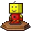
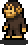

开罗君
根据官方宣称，开罗君是程序员兼设计师，经常故障，总数有20000只。正式名称是“开罗君”而非“开罗”，因此游戏中被称为“开罗君先生”。在各游戏中多数充当隐藏角色，能力比其他角色较强，但是在某些游戏中是量产型的消耗品（再见开罗君、开罗之星）。

森野熊
其座右铭是“幸福·安全·甜蜜”，大多数情况下，只要给钱（包括真实的货币），他的建造和改建速度会非常迅速。
极猩猩
开罗游戏公司（日语：株式会社カイロソフト；英语：Kairosoft Co.,Ltd）
一家位于日本东京的手机游戏和电脑游戏的开发商。除此之外，此公司业务还包括玩具的企划、开发等。
公司于2007年9月正式成立，不过早在1996年，公司的创办人已经开始制作并在杂志上发布游戏。公司最先推出以电脑为平台的游戏，后来才将游戏发布平台由电脑转变为手机，公司亦曾推出实物周边。
起初手机版本开发的对象包括电讯供应商SoftBank、au、NTT DOCOMO等旗下手机及可运作JAVA的手机；随着iOS和Android兴起，公司才开始将部分游戏移植到其他手机操作系统。
曾获英国手机游戏网站Pocket Gamer评选为“Top 50 Developers of 2011”第四十九名和“Top 50 Developers of 2012”第三十名。
公司名言：没有必要做出几百万人都支持的游戏，只要能抓住这十万玩家的心灵。
开罗游戏大多是采用俯视视角的像素风模拟经营游戏，美术素材倾向于复用，角色也常是跨作品登场。
依靠高自由度，入门简单，难度适中，以及幽默搞怪的文风而被玩家熟知。
另外，大部份游戏都是没有结局的，而且不会因为完成收集道具、达到某些条件或任务失败而导致游戏结束，就算金钱值出现负数，游戏仍然会继续，所以理论上可以永远玩下去。
不过，游戏会在指定时间后计算积分，因此会有最高分。玩家可以在结算后开启二周目游戏，新的周目会继承部分内容以便于玩家冲击更高分数。合适的游戏时长也让玩家可以在审美疲劳之前体验完游戏的大多数内容。
|

开罗君 |
官方的吉祥物。 根据官方宣称，开罗君是程序员兼设计师，经常故障，总数有20000只。正式名称是“开罗君”而非“开罗”，因此游戏中被称为“开罗君先生”。在各游戏中多数充当隐藏角色，能力比其他角色较强，但是在某些游戏中是量产型的消耗品（再见开罗君、开罗之星）。 |
|
森野熊 | 开罗游戏系列的吉祥物之一，多数以“森野工程公司”或“森野建筑公司”社长的身份登场，有时与开罗君和极猩猩一样，以隐藏角色的身份登场。 其座右铭是“幸福·安全·甜蜜”，大多数情况下，只要给钱（包括真实的货币），他的建造和改建速度会非常迅速。 |
|

极猩猩 |
官方宣称，它是统领图像部门和音乐部门的高人，偶尔流露出温柔的一面，喜欢香蕉和橘子。游戏中因为工作很累所以想靠版权生活（漫画道场），不能很好的使用笔。虽然想要成为歌手（百万进行曲），但是在营业之前就被温泉街的魅力征服，还下落不明（暖暖温泉乡），在温泉街贩卖的杂志中看到他想要过百货商店的正常生活（百货商店）。和开罗君一样，大多是作为隐藏角色登场，能力时强时弱。有女性版的“猩猩子”和幼年版的“小猩猩”（チンパン少年）。 |
| ...... |